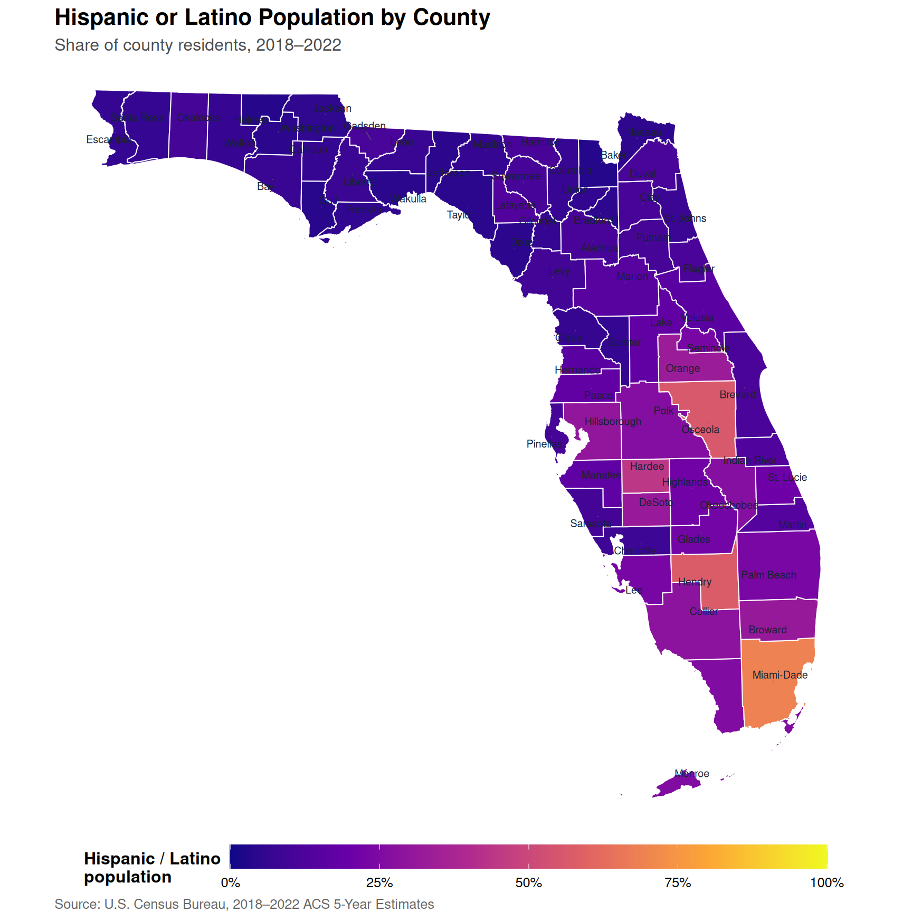
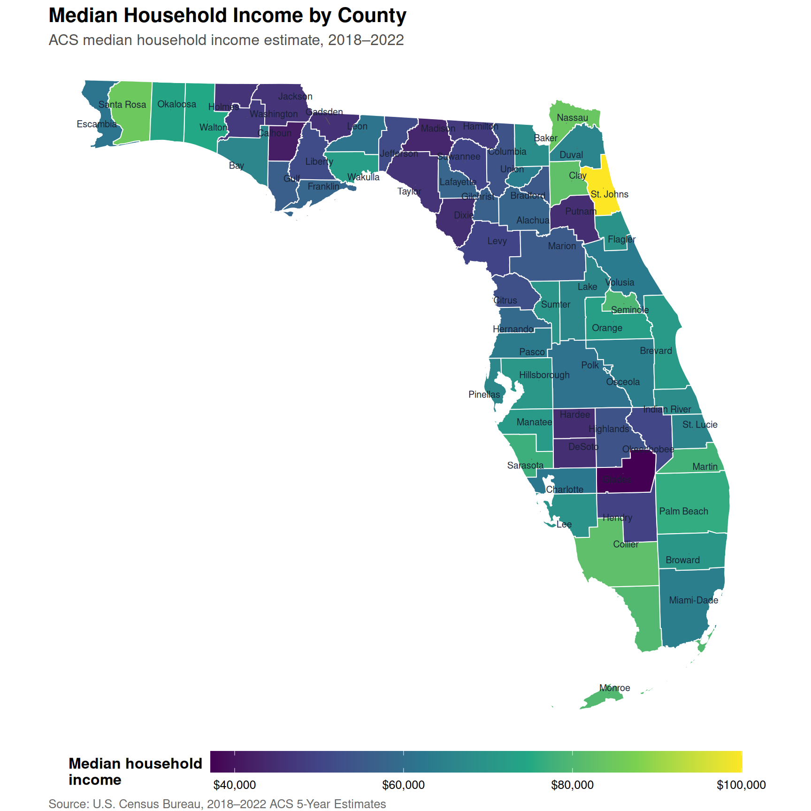
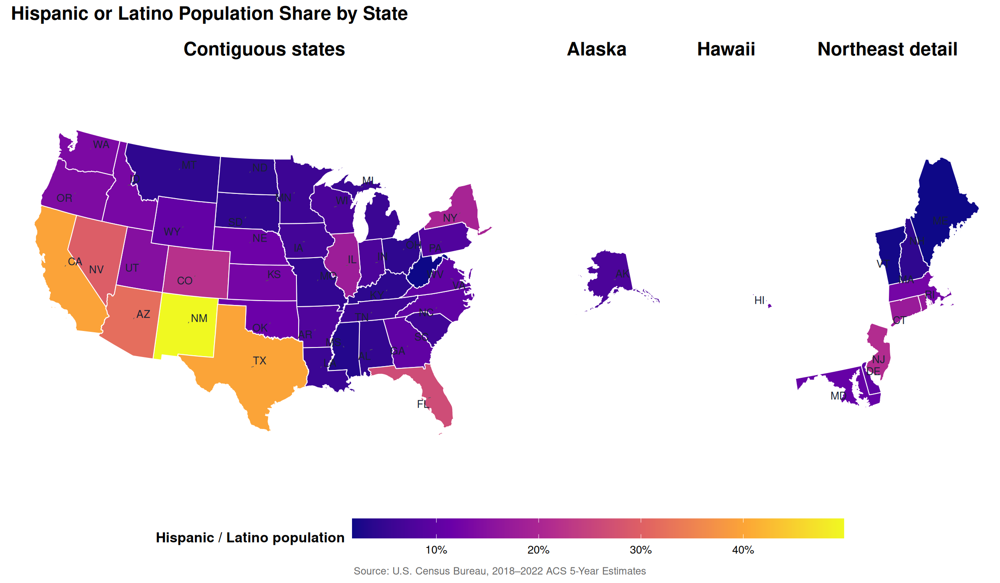
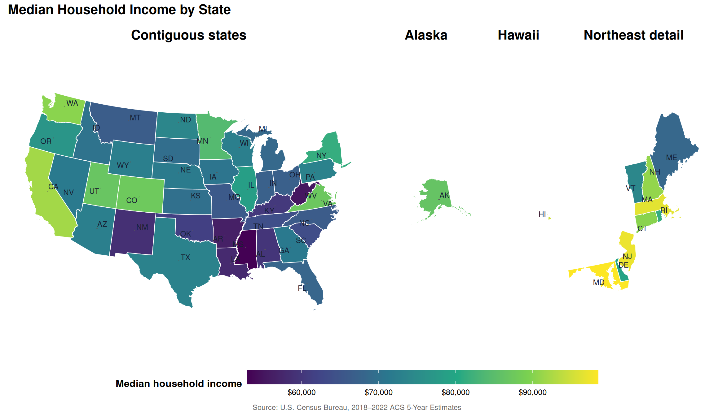

Florida & U.S. Census Geography
County- and state-level patterns in income and Hispanic population
Florida Counties
These maps show both Hispanic or Latino population share and median household income across all 67 Florida counties. County names are labeled directly on each map.

United States
The national maps compare all 50 states. Alaska and Hawaii are shown in separate panels so they remain visible at a useful scale; state postal abbreviations identify each map area.


County and State Estimates
Search, sort, or filter the table to inspect population, Hispanic or Latino population share, and median household income for every Florida county and every U.S. state. Values are ACS 5-Year Estimates for 2018–2022.